Five Phases in the Evolution of Random Graphs
Erdős–Rényi (1960) is a pioneering study on the evolution of random graphs. The paper is short but dense. In this page, I am attempting to replicate their theoretical findings empirically using various graph sizes.
1. Phase 1
Phase 1. corresponds to the range $N(n) = o(n)$. For this phase it is characteristic that $\Gamma_{n, N(n)}$ consists almost surely (i.e. with probability tending to $1$ for $n \to +\infty$) exclusively of components which are trees. Trees of order $k$ appear only when $N(n)$ reaches the order of magnitude $n^{\frac{k-2}{k-1}}$ $(k = 3, 4, \ldots)$.
If $N(n) \sim \rho n^{\frac{k-2}{k-1}}$ with $\rho > 0$, then the probability distribution of the number of components of $\Gamma_{n, N(n)}$ which are trees of order $k$ tends for $n \to +\infty$ to the Poisson distribution with mean value
If $\dfrac{N(n)}{n^{\frac{k-2}{k-1}}} \to +\infty$ then the distribution of the number of components which are trees of order $k$ is approximately normal with mean
and with variance also equal to $M_n$. This result holds also in the next two ranges, in fact it holds under the single condition that $M_n \to +\infty$ for $n \to +\infty$.
How I am reading Phase 1 empirically. Phase 1 is the regime where the graph is still extremely sparse, so the overall picture should look like a forest rather than a cycle-rich network. For finite simulations, the cleanest way to see the theory is to compare the same construction at $n = 100$, $1000$, and $10{,}000$, and ask what changes as the graph gets larger while remaining in the sparse range $N(n)=o(n)$.
The four subsections below break the paragraph into smaller ideas: first the “forest” interpretation, then the threshold scale for seeing trees of a fixed size, then the Poisson counting regime right at threshold, and finally the approximately normal regime when the count of such trees becomes large.
Forest viewpoint: $N(n)=o(n)$ means the graph stays overwhelmingly tree-like
Animation A
erdos_renyi_1960_phase1_1a.mp4Animation B
erdos_renyi_1960_phase1_1b.mp4Figure

erdos_renyi_1960_phase1_1.pngWhat is happening here. The sentence $N(n)=o(n)$ says that the number of edges grows more slowly than the number of vertices. Equivalently, the average degree $2N(n)/n$ goes to $0$. So most vertices should still be isolated, and most nontrivial connected components should be tiny trees rather than cycle-bearing pieces.
| Example choice inside Phase 1 | $n=100$ | $n=1000$ | $n=10{,}000$ |
|---|---|---|---|
| Take $N(n)=\lfloor\sqrt{n}\rfloor$ | $N=10$ | $N=31$ | $N=100$ |
| Average degree $2N/n$ | $0.20$ | $0.062$ | $0.020$ |
| What the picture should look like | Many isolates, a few edges and tiny paths, with finite-size noise still visible | Even more dominated by isolates and tiny trees | Extremely sparse forest-like picture, with almost no room for large connected pieces |
- For $n=100$, you may still occasionally see a stray cycle in some runs, because finite-size randomness is noticeable.
- For $n=1000$, the empirical picture should align much better with the claim that every component is a tree, or at least that non-tree behavior is very rare.
- For $n=10{,}000$, the phrase “almost surely” should begin to feel concrete: repeated simulations should overwhelmingly look like random forests.
- The theory is not saying every sample path is identical. It says the probability of seeing only tree components moves closer and closer to $1$ as $n$ becomes large.
Appearance thresholds: trees of order $k$ show up at scale $N(n)\asymp n^{\frac{k-2}{k-1}}$
Animation A
erdos_renyi_1960_phase1_2a.mp4Animation B
erdos_renyi_1960_phase1_2b.mp4Figure

erdos_renyi_1960_phase1_2.pngWhat is happening here. The next sentence says that a tree-component on exactly $k$ vertices does not become visible at an arbitrary sparse scale. It begins to appear when the edge count reaches the order of magnitude $n^{\frac{k-2}{k-1}}$. So larger tree-components require denser graphs before they show up in noticeable numbers.
| Threshold scale for fixed tree size | $n=100$ | $n=1000$ | $n=10{,}000$ |
|---|---|---|---|
| $k=3$ tree threshold: $n^{1/2}$ | $10$ | $31.6$ | $100$ |
| $k=4$ tree threshold: $n^{2/3}$ | $21.5$ | $100$ | $464.2$ |
| $k=5$ tree threshold: $n^{3/4}$ | $31.6$ | $177.8$ | $1000$ |
- If you are studying 3-vertex trees, the natural edge scales to compare are around $10$, $32$, and $100$ for $n=100$, $1000$, and $10{,}000$.
- At those same edge counts, 4-vertex and 5-vertex trees are still less developed, because their thresholds are higher.
- This is the empirical meaning of “trees of order $k$ appear only when $N(n)$ reaches the order of magnitude $n^{\frac{k-2}{k-1}}$.”
- In animations, the visual effect should be that larger tree-components arrive later: first tiny edges and 3-vertex trees, then somewhat larger tree pieces, and only afterwards more elaborate acyclic components.
At threshold: the number of $k$-vertex trees should look Poisson
Animation A
erdos_renyi_1960_phase1_3a.mp4Animation B
erdos_renyi_1960_phase1_3b.mp4Figure
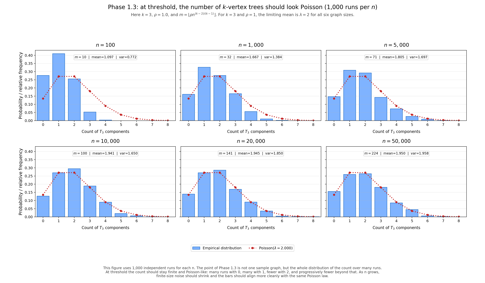
erdos_renyi_1960_phase1_3.pngWhat is happening here. If $N(n) \sim \rho n^{\frac{k-2}{k-1}}$, then we are right in the window where trees of order $k$ are rare but visible. The count does not explode; instead it stabilizes into a Poisson-type random variable. That means many runs with $0$, many with $1$, fewer with $2$, and so on.
| Example: choose $k=3$ and $\rho=1$ | $n=100$ | $n=1000$ | $n=10{,}000$ |
|---|---|---|---|
| Threshold-scale edge count $N(n)\approx n^{1/2}$ | $10$ | $31.6$ | $100$ |
| Poisson mean from the formula $\lambda=\dfrac{(2\rho)^{k-1}k^{k-2}}{k!}$ | $\lambda = \dfrac{(2)^2\cdot 3}{3!}=2$ for all three graphs | ||
| Empirical expectation over many runs | Counts of 3-vertex trees should cluster around $0$, $1$, $2$, $3$ | Histogram should look more convincingly Poisson | Very clean rare-event counting regime, with finite-size noise much reduced |
- The formula for $\lambda$ gives the limiting average number of $k$-vertex tree-components, not the exact count in any one graph.
- For $k=3$ and $\rho=1$, all three graph sizes are aiming at the same limiting mean $\lambda=2$, but the larger graphs should match it more cleanly.
- This is where repeated simulation becomes especially informative: one sample graph is not enough, because the statement concerns the distribution of the count over many runs.
- A good Phase 1.3 figure would therefore be a histogram or frequency table rather than a single network picture alone.
Above threshold: many $k$-vertex trees and an approximately normal count
Animation A
erdos_renyi_1960_phase1_4a.mp4Animation B
erdos_renyi_1960_phase1_4b.mp4Figure
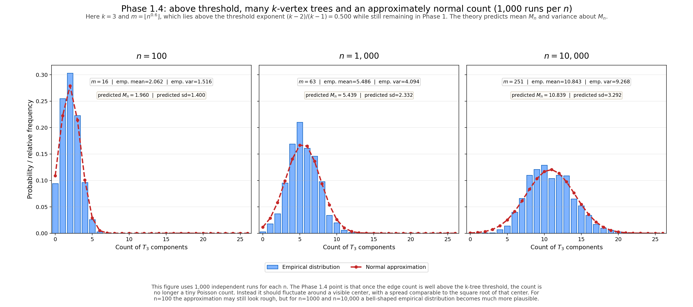
erdos_renyi_1960_phase1_4.pngWhat is happening here. Once $N(n)$ is much larger than $n^{\frac{k-2}{k-1}}$, the number of tree-components of order $k$ is no longer a small Poisson count. It becomes large enough that the fluctuations are approximately normal, with mean $M_n$ and variance also about $M_n$. In practice, the count should now wobble around a visible center with spread on the order of $\sqrt{M_n}$.
| Example: choose $k=3$ and $N(n)=\lfloor n^{0.6}\rfloor$ | $n=100$ | $n=1000$ | $n=10{,}000$ |
|---|---|---|---|
| Edge count | $15$ | $63$ | $251$ |
| Compared with the 3-tree threshold $n^{1/2}$ | Above threshold, but only modestly | More clearly above threshold | Decisively above threshold while still remaining in Phase 1 |
| What should happen to the count of 3-vertex trees | It should be more common than in the Poisson window, though still noisy | The count should concentrate around a visible mean | A bell-shaped empirical histogram becomes much more plausible |
- The formula $$M_n = n\,\frac{k^{k-2}}{k!}\left(\frac{2N(n)}{n}\right)^{k-1} e^{-\frac{2kN(n)}{n}}$$ should be read as: number of possible places for a $k$-tree, times the chance the required edges exist, times the chance the tree stays isolated from the rest of the graph.
- For $n=100$, the approximation may still look rough, because the sample size is not large enough for a clean bell curve.
- For $n=1000$, the distinction between the Poisson window and the “many copies” window becomes easier to see in repeated simulations.
- For $n=10{,}000$, the theory should translate most cleanly: the graph is still sparse overall, but the count of a fixed local structure can already behave in an approximately normal way.
2. Phase 2
Phase 2. corresponds to the range $N(n) \sim cn$ with $0 < c < 1/2$.
In this case $\Gamma_{n, N(n)}$ already contains cycles of any fixed order with probability tending to a positive limit: the distribution of the number of cycles of order $k$ in $\Gamma_{n, N(n)}$ is approximately a Poisson-distribution with mean value
In this range almost surely all components of $\Gamma_{n, N(n)}$ are either trees or components consisting of an equal number of edges and vertices, i.e. components containing exactly one cycle.
The distribution of the number of components consisting of $k$ vertices and $k$ edges tends for $n \to +\infty$ to the Poisson distribution with mean value
In this phase though not all, but still almost all (i.e. $n-o(n)$) vertices belong to components which are trees. The mean number of components is $n - N(n) + O(1)$, i.e. in this range by adding a new edge the number of components decreases by $1$, except for a finite number of steps.
How I am reading Phase 2 empirically. Phase 2 is the first genuinely cycle-bearing sparse regime. The graph is still globally thin, because the edge count is only linear in $n$, but it is no longer a pure forest. Fixed cycles now appear with nonvanishing probability, most non-tree components are expected to be unicyclic, and yet most vertices still lie in tree components rather than in dense tangles.
The four subsections below unpack the paragraph one claim at a time: first the appearance of fixed cycles, then the tree-versus-unicyclic component picture, then the Poisson law for unicyclic components of a fixed size, and finally the statement that most vertices are still in trees while the total number of components is roughly $n-N(n)$.
Fixed cycles now appear with positive limiting probability
Animation A
erdos_renyi_1960_phase2_1a.mp4Animation B
erdos_renyi_1960_phase2_1b.mp4Figure
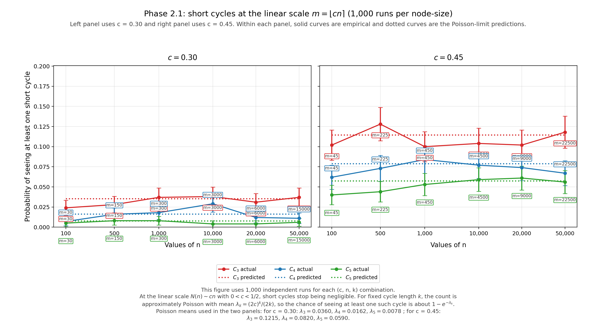
erdos_renyi_1960_phase2_1.pngWhat is happening here. Unlike Phase 1, we are now at the linear scale $N(n)\sim cn$. That is exactly dense enough for short cycles to stop being negligible. The count of $k$-cycles no longer goes to $0$; it tends to a Poisson law with mean $\dfrac{(2c)^k}{2k}$. So a triangle, 4-cycle, or 5-cycle can genuinely appear with a stable nonzero probability as $n$ grows.
| Example: choose $c=0.45$ | $n=100$ | $n=1000$ | $n=10{,}000$ |
|---|---|---|---|
| Edge count $N(n)\approx cn$ | $45$ | $450$ | $4500$ |
| Mean number of triangles, $\dfrac{(2c)^3}{6}$ | $0.1215$ | ||
| Mean number of 4-cycles, $\dfrac{(2c)^4}{8}$ | $0.0820$ | ||
| Empirical meaning | Some runs have no short cycle at all | Some runs have one short cycle, occasionally more | The same Poisson-type probabilities should look cleaner across repeated runs |
- The important point is not that the expected number is large. It is that it stays away from $0$ in the limit, so cycles become genuinely visible.
- For $n=100$, finite-size noise is still noticeable, so a few extra or missing short cycles may not be surprising.
- For $n=1000$ and $n=10{,}000$, repeated experiments should stabilize around the same Poisson-type frequencies.
- Graphically, Phase 2 should no longer look like a pure forest. A few small closed loops should now begin to appear among many tree components.
Most connected components are either trees or exactly one cycle
Animation A
erdos_renyi_1960_phase2_2a.mp4Animation B
erdos_renyi_1960_phase2_2b.mp4Figure
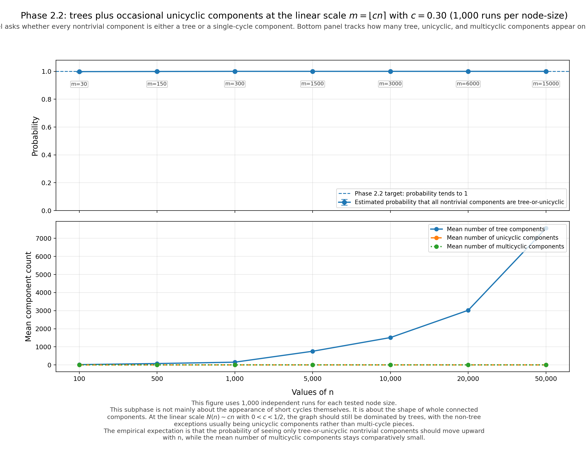
erdos_renyi_1960_phase2_2.pngWhat is happening here. The next sentence says that the graph has not yet become a mess of multi-cycle components. The dominant picture is still sparse: most components are trees, and the non-tree exceptions are usually unicyclic components, meaning connected pieces with the same number of edges and vertices.
| Example: choose $c=0.30$ | $n=100$ | $n=1000$ | $n=10{,}000$ |
|---|---|---|---|
| Edge count $N(n)\approx cn$ | $30$ | $300$ | $3000$ |
| Average degree $2N/n$ | $0.60$ | $0.60$ | $0.60$ |
| What the component picture should look like | Mostly trees, with a few isolated unicyclic pieces | Still overwhelmingly trees, but occasional single-cycle components clearer | A very consistent tree-or-unicyclic decomposition across runs |
- The new phenomenon in Phase 2 is not “many complicated components.” It is “trees plus occasional single-cycle components.”
- For $n=100$, a component with two or more independent cycles can still occasionally show up, but it should not dominate the picture.
- For $n=1000$ and $n=10{,}000$, the claim should become much cleaner: almost every nontrivial component is either acyclic or unicyclic.
- In a visualization, this means the graph should mostly look like isolated vertices, small trees, and a few lollipop- or loop-shaped components with exactly one cycle.
Unicyclic components of a fixed size also have a Poisson law
Animation A
erdos_renyi_1960_phase2_3a.mp4Animation B
erdos_renyi_1960_phase2_3b.mp4Figure
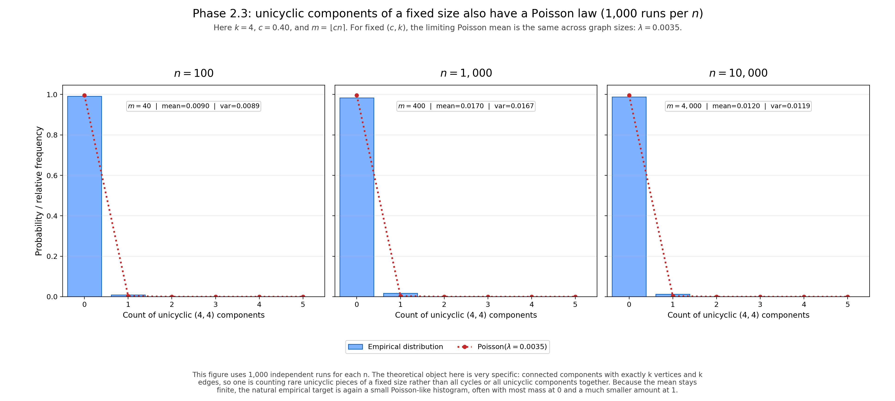
erdos_renyi_1960_phase2_3.pngWhat is happening here. Erdős–Rényi go one level finer: not only do fixed cycles appear, but the number of connected components with exactly $k$ vertices and $k$ edges also tends to a Poisson law. These are unicyclic components of order $k$.
| Example: choose $c=0.40$ and track unicyclic components of order $k=4$ | $n=100$ | $n=1000$ | $n=10{,}000$ |
|---|---|---|---|
| Edge count $N(n)\approx cn$ | $40$ | $400$ | $4000$ |
| Poisson mean from the formula | $0.0090$ for all three graphs | ||
| Empirical reading over many runs | Almost all runs have zero such components | Very occasional runs have one | The same rare-event law should be visible much more cleanly in a large Monte Carlo sample |
- This part of the theory concerns a very specific component type: connected, on $k$ vertices, with exactly one cycle.
- Because the mean is finite, the natural empirical object is again a histogram or frequency table over many runs, not a single graph picture.
- For $n=100$, the distribution may look noisy simply because the event is rare.
- For $n=1000$ and $n=10{,}000$, the empirical frequencies should align better with the predicted Poisson law, even though the typical count is still small.
Most vertices still lie in trees, and the number of components is about $n-N(n)$
Animation A
erdos_renyi_1960_phase2_4a.mp4Animation B
erdos_renyi_1960_phase2_4b.mp4Figure
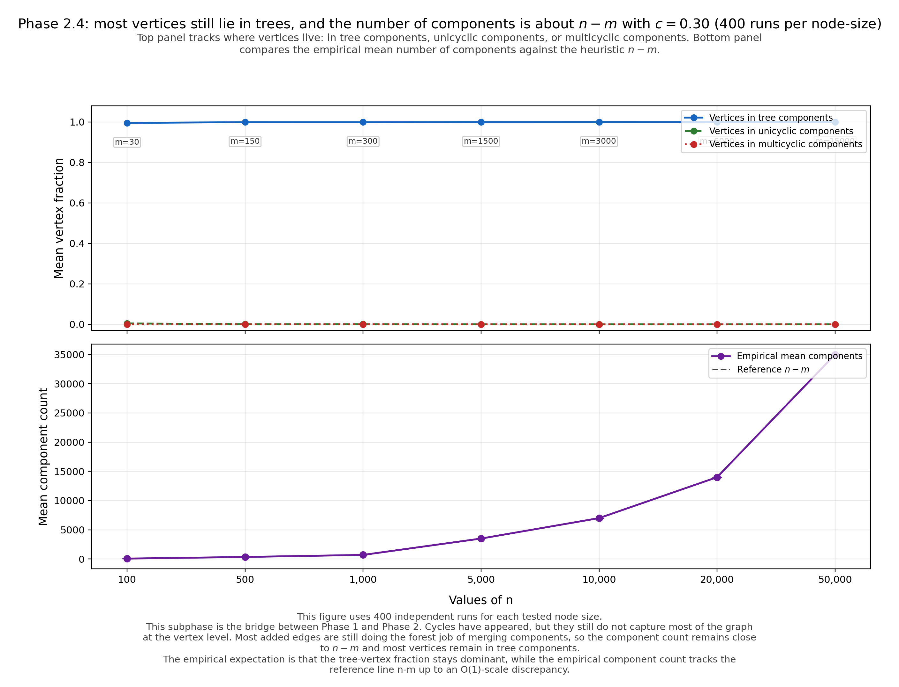
erdos_renyi_1960_phase2_4.pngWhat is happening here. Even though cycles are now present, they still do not capture most of the graph. The excerpt says that almost all vertices remain in tree components, and the mean number of components is about $n-N(n)+O(1)$. The reason is intuitive: most new edges still connect two formerly separate components, so they reduce the component count by $1$. Only occasionally does an added edge stay inside an existing component and create a single cycle.
| Example: choose $c=0.30$ | $n=100$ | $n=1000$ | $n=10{,}000$ |
|---|---|---|---|
| Edge count $N(n)\approx cn$ | $30$ | $300$ | $3000$ |
| Reference count $n-N(n)$ | $70$ | $700$ | $7000$ |
| Vertex-level picture | Most vertices still sit in trees, not in cyclic pieces | Tree vertices clearly dominate, despite a few visible cycles | The graph is cycle-bearing but still overwhelmingly tree-based at the level of vertices |
- This is an important conceptual bridge from Phase 1 to Phase 2: cycles appear, but trees are still the dominant structure at the vertex level.
- The approximation $n-N(n)+O(1)$ says that almost every added edge is still doing the “forest job” of merging two components rather than creating complex internal structure.
- For $n=100$, deviations from the heuristic may still be noticeable in individual runs.
- For $n=1000$ and $n=10{,}000$, the mean component count and the dominance of tree vertices should line up more convincingly with the theory.
3. Phase 3
Phase 3. corresponds to the range $N(n) \sim cn$ with $c \geq 1/2$. When $N(n)$ passes the threshold $n/2$, the structure of $\Gamma_{n, N(n)}$ changes abruptly. As a matter of fact this sudden change of the structure of $\Gamma_{n, N(n)}$ is the most surprising fact discovered by the investigation of the evolution of random graphs.
While for $N(n) \sim cn$ with $c < 1/2$ the greatest component of $\Gamma_{n, N(n)}$ is a tree and has (with probability tending to $1$ for $n \to +\infty$) approximately $\dfrac{1}{\alpha}\left(\log n - \dfrac{5}{2}\log\log n\right)$ vertices, where $\alpha = 2c - 1 - \log 2c$, for $N(n) \sim n/2$ the greatest component has (with probability tending to $1$ for $n \to +\infty$) approximately $n^{2/3}$ vertices and has a rather complex structure.
Moreover for $N(n) \sim cn$ with $c > 1/2$ the greatest component of $\Gamma_{n, N(n)}$ has (with probability tending to $1$ for $n \to +\infty$) approximately $G(c)n$ vertices, where
(clearly $G(1/2)=0$ and $\lim_{c \to +\infty} G(c)=1$).
Except this “giant” component, the other components are all relatively small, most of them being trees, the total number of vertices belonging to components which are trees being almost surely $n(1-G(c)) + o(n)$ for $c \geq 1/2$.
As regards the mean number of components, this is for $N(n) \sim cn$ with $c > 1/2$ asymptotically equal to
The evolution of $\Gamma_{n, N(n)}$ in Phase 3 may be characterized by that the small components (most of which are trees) melt, each after another, into the giant component, the smaller components having the larger chance of “survival”; the survival time of a tree of order $k$ which is present in $\Gamma_{n, N(n)}$ with $N(n) \sim cn$, $c > 1/2$ is approximately exponentially distributed with mean value $n/2k$.
How I am reading Phase 3 empirically. This is the dramatic phase transition of the paper. The graph is no longer just a sparse collection of trees and unicyclic pieces. Around $N(n) \approx n/2$, the largest component changes scale abruptly: just below the threshold it is still small, at the threshold it becomes critically large, and above the threshold it takes over a positive fraction of all vertices.
The four subsections below unpack that transition into a practical simulation plan: first the regime just below the threshold, then the critical window itself, then the supercritical giant component, and finally the gradual absorption of small components into that giant piece.
Just below $n/2$: the largest component is still sublinear and usually tree-like
Animation A
erdos_renyi_1960_phase3_1a.mp4Animation B
erdos_renyi_1960_phase3_1b.mp4Figure
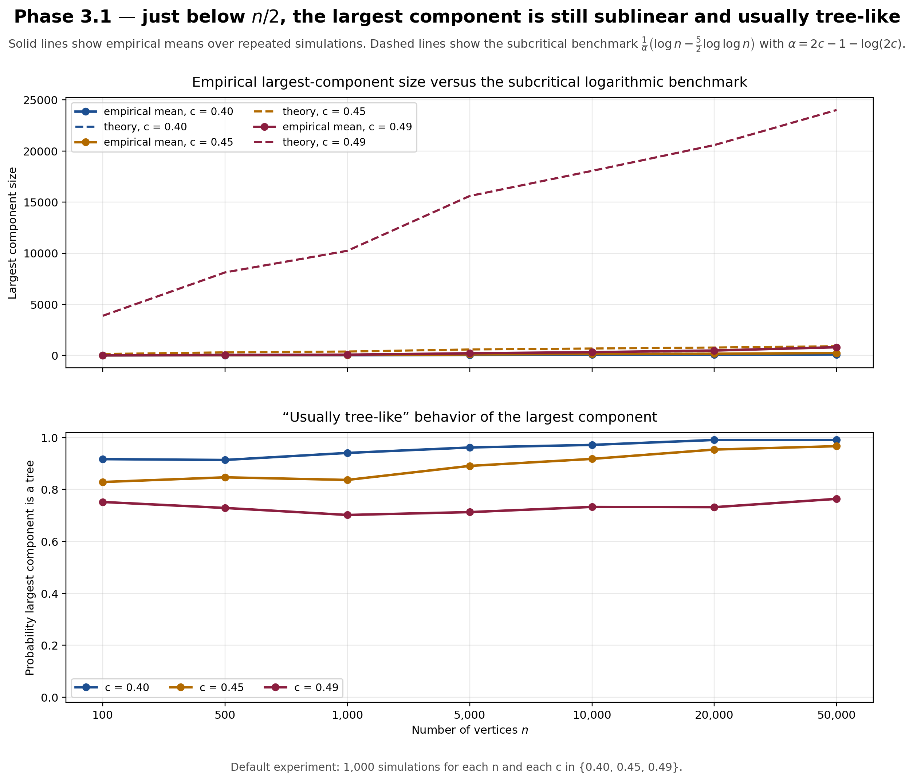
erdos_renyi_1960_phase3_1.pngWhat is happening here. The paper contrasts the near-critical picture with the earlier subcritical one. When $N(n) \sim cn$ with $c < 1/2$, the largest component is still small compared with $n$, and it is still dominated by tree behavior. The formula involving $\alpha = 2c - 1 - \log(2c)$ tells us that the largest component grows only on the logarithmic scale.
- A natural experiment here is to compare values such as $c=0.40$, $0.45$, and $0.49$ while keeping the same vertex set size.
- The largest component should look noticeably bigger than in Phase 2, but still nowhere near a fixed fraction of the whole graph.
- For moderate $n$, this is the last regime where the network still feels like many separate sparse pieces rather than one dominant body.
- A good figure here would track the size of the largest component against $n$ or against $c$ as the threshold is approached from below.
At the threshold $N(n) \sim n/2$: the largest component jumps to order $n^{2/3}$
Animation A
erdos_renyi_1960_phase3_2a.mp4Animation B
erdos_renyi_1960_phase3_2b.mp4Figure
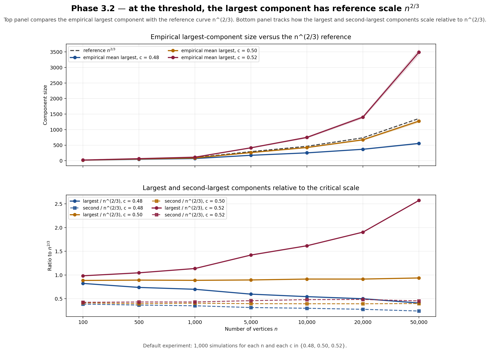
erdos_renyi_1960_phase3_2.pngWhat is happening here. Exactly at the critical scale, the largest component is no longer logarithmic, but it is not yet linear either. The paper says it has order $n^{2/3}$ and a rather complex structure. This is the sharp transition point where the component picture is neither purely sparse nor already dominated by a full giant.
- This is a good place for side-by-side simulations showing the same graph process slightly before, at, and slightly after $N=n/2$.
- The largest component should become visually striking, but there should still be serious competition from other medium-sized components.
- Compared with Phase 2, the network now develops large, irregular pieces rather than just a few isolated cycles.
- A figure for this subsection could compare the empirical largest-component size with the reference scale $n^{2/3}$.
Above the threshold $c > 1/2$: a giant component of size $G(c)n$ emerges
Animation A
erdos_renyi_1960_phase3_3a.mp4Animation B
erdos_renyi_1960_phase3_3b.mp4Figure
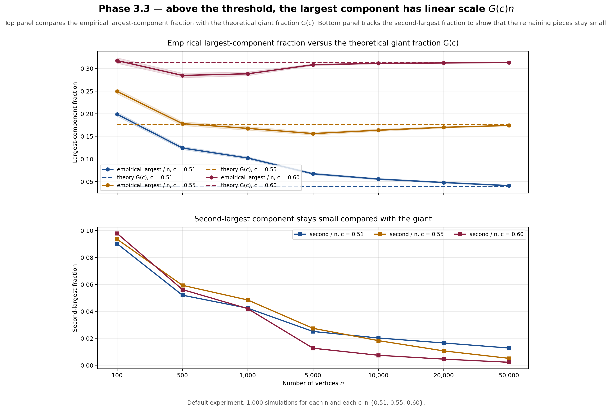
erdos_renyi_1960_phase3_3.pngWhat is happening here. Once $c$ moves beyond $1/2$, the largest component takes a positive linear fraction of the graph. The function $G(c)$ is the asymptotic fraction of vertices captured by the giant component. The rest of the graph remains fragmented into relatively small pieces.
- A natural empirical comparison is to plot the largest-component fraction for choices such as $c=0.55$, $0.70$, and $1.00$.
- The larger $c$ becomes, the closer the giant component should move toward containing almost all vertices.
- The rest of the components should look tiny by comparison, even though many of them are still trees.
- A useful figure here would compare the observed largest-component fraction with the theoretical curve $G(c)$.
Small components melt into the giant, with smaller trees surviving longer
Animation A
erdos_renyi_1960_phase3_4a.mp4Animation B
erdos_renyi_1960_phase3_4b.mp4Figure
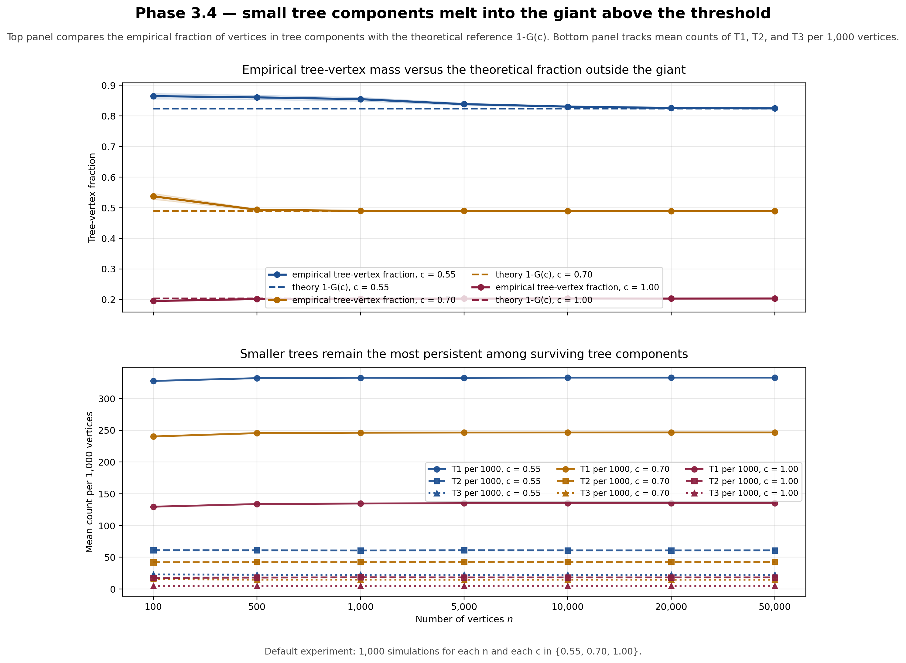
erdos_renyi_1960_phase3_4.pngWhat is happening here. The paper gives a vivid qualitative description: small components, especially trees, are gradually swallowed by the giant component. Smaller trees are more likely to remain outside the giant for longer, and the survival time of a tree of order $k$ is approximately exponential with mean $n/2k$.
- This suggests a simulation where one tracks tagged components over time after the giant first appears.
- Tree components of size $1$, $2$, or $3$ should linger longer than larger sparse components.
- The total number of vertices in tree components should decrease as the giant expands.
- A good summary figure here would plot the decay of tree vertices or the survival times of fixed-size trees.
4. Phase 4
Phase 4. corresponds to the range $N(n) \sim c n \log n$ with $c \leq 1/2$. In this phase the graph almost surely becomes connected. If
then there are with probability tending to $1$ for $n \to +\infty$ only trees of order $\leq k$ outside the giant component, the distribution of the number of trees of order $k$ having in the limit again a Poisson distribution with mean value
Thus for $k=1$, i.e. for
$\Gamma_{n, N(n)}$ consists, with probability tending to $1$ for $n \to +\infty$, only of a connected component containing $n-O(1)$ points and a few isolated points, the distribution of the number of these being approximately a Poisson distribution with mean value $e^{-2y}$. Thus in case (4) the probability that the whole graph $\Gamma_{n, N(n)}$ is connected tends to $e^{-e^{-2y}}$ for $n \to +\infty$ and thus this probability approaches $1$ as $y$ increases.
This last result has been obtained by us already in 1958. The probability of $\Gamma^{**}_{n,N}$ being connected has been investigated by E. N. Gilbert. It should be mentioned that the investigation of $\Gamma^{**}_{n,N}$ can be reduced to that of $\Gamma_{n,N}$ as follows. $\Gamma^{**}_{n,N}$ can be obtained by first choosing the value $k$ of a random variable $\xi$ having the binomial distribution
and then choosing $\Gamma_{n,k}$. In this way one can show that the threshold and the threshold function for connectivity of $\Gamma^{**}_{n,N}$ are the same as that of $\Gamma_{n,N}$.
2) The mean number of components of $\Gamma^{**}_{n,N}$ has been investigated in [3]. Our results for $\Gamma_{n,N}$ are however more far reaching.
3) This idea has been used by J. Hájek [5] in the theory of sampling from a finite population who has shown in this way that the Lindeberg-type conditions given by us [6] for the validity of the central limit theorem for samples from a finite population are not only sufficient but also necessary.
How I am reading Phase 4 empirically. Phase 4 is the connectivity window. The giant component is already present, but the graph still fails to be connected because a few tiny tree remnants remain outside it. As the number of edges approaches the scale $(n/2)\log n$, the remaining obstructions collapse in an orderly way.
The four subsections below separate that story into increasingly fine claims: first the general connectivity window, then the refined $k$-tree statement, then the special role of isolated vertices, and finally the limiting probability of being fully connected.
Entering the connectivity window: one dominant component plus a few tiny tree remnants
Animation A
erdos_renyi_1960_phase4_1a.mp4Animation B
erdos_renyi_1960_phase4_1b.mp4Figure
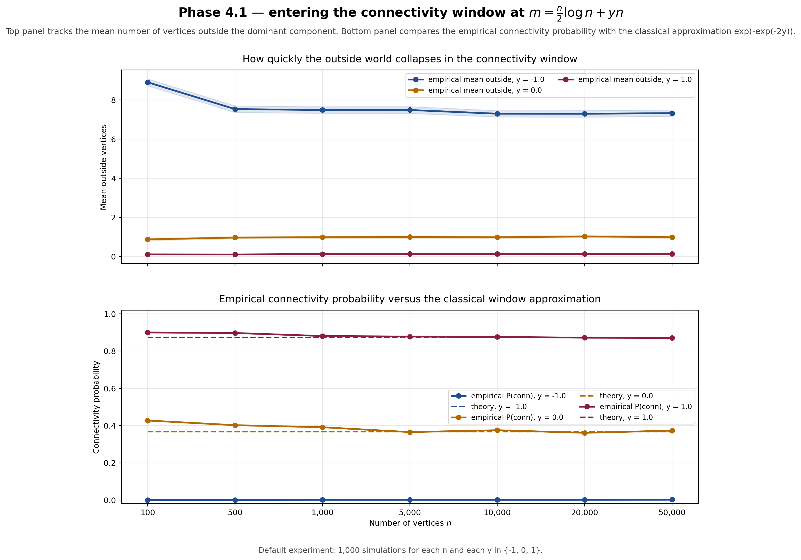
erdos_renyi_1960_phase4_1.pngWhat is happening here. By the time the edge count reaches order $n\log n$, the graph has essentially one overwhelmingly large component. The only reason the graph may still fail to be connected is that a few tiny tree components remain outside it.
- This is the right place for visualizations that highlight the main component and separately color the leftover pieces.
- Compared with Phase 3, the outside world is now extremely thin: just a few tree fragments rather than a broad cloud of small components.
- A good empirical question is how quickly the count of outside vertices falls as the $c n\log n$ scale is crossed.
- A simple figure here could track the number of vertices not in the giant component.
Refined window for fixed $k$: only trees of order at most $k$ remain outside the giant
Animation A
erdos_renyi_1960_phase4_2a.mp4Animation B
erdos_renyi_1960_phase4_2b.mp4Figure

erdos_renyi_1960_phase4_2.pngWhat is happening here. The paper gives a more delicate scaling for the last leftover tree components. At the edge count $N(n)=\dfrac{n}{2k}\log n + \dfrac{k-1}{2k}n\log\log n + yn + o(n)$, the components outside the giant are almost surely only trees of order at most $k$.
- This suggests a family of experiments indexed by $k=1,2,3,\dots$.
- For each fixed $k$, one can count how many $k$-vertex trees remain outside the giant component.
- The limiting count should again follow a Poisson law with mean $\dfrac{e^{-2ky}}{k\cdot k!}$.
- A clean figure here would compare empirical histograms for leftover $k$-trees with the corresponding Poisson prediction.
The special case $k=1$: isolated vertices are the last major obstruction to connectivity
Animation A
erdos_renyi_1960_phase4_3a.mp4Animation B
erdos_renyi_1960_phase4_3b.mp4Figure

erdos_renyi_1960_phase4_3.pngWhat is happening here. The case $k=1$ is the most concrete version of the theory. Near $N(n)=\dfrac{n}{2}\log n + yn + o(n)$, the graph should look like one giant connected block plus only a few isolated vertices. The number of those isolates is approximately Poisson with mean $e^{-2y}$.
- This is a very natural simulation target because isolated vertices are easy to count and visualize.
- For negative $y$, isolates should still be fairly common; for positive $y$, they should become rare.
- The graph typically fails to be connected only because of those last isolated points.
- A useful figure here would show the empirical distribution of isolated-vertex counts for several values of $y$.
The threshold function for full connectivity: probability tends to $e^{-e^{-2y}}$
Animation A
erdos_renyi_1960_phase4_4a.mp4Animation B
erdos_renyi_1960_phase4_4b.mp4Figure

erdos_renyi_1960_phase4_4.pngWhat is happening here. The final statement of Phase 4 is a full threshold function: when the edge count is centered at the right scale, the probability of connectivity approaches $e^{-e^{-2y}}$. So the connectivity window is not only a yes-or-no threshold, but a precise limiting curve.
- This is ideal for repeated Monte Carlo runs over a grid of $y$ values.
- The resulting empirical curve should steepen as $n$ grows, while approaching the theoretical limit.
- The same threshold phenomenon also carries over to the closely related $G(n,p)$ model discussed in the excerpt.
- A good figure here would place the empirical connectivity probability against the theoretical curve on the same axes.
5. Phase 5
Phase 5. consists of the range $N(n) \sim (n \log n)\,\omega(n)$ where $\omega(n) \to +\infty$. In this range the whole graph is not only almost surely connected, but the orders of all points are almost surely asymptotically equal. Thus the graph becomes in this phase “asymptotically regular”.
How I am reading Phase 5 empirically. Phase 5 is what happens well after connectivity has already been secured. The graph is now much denser than the Phase 4 threshold, though still very far from complete. What matters here is not merely that every vertex belongs to the same component, but that the degree profile becomes highly uniform across the whole graph.
The four subsections below turn that short excerpt into a practical simulation agenda: first robust connectivity, then the growth of the average degree, then concentration of the degree histogram, and finally a direct interpretation of asymptotic regularity.
Well beyond the connectivity threshold: connectivity becomes overwhelming and robust
Animation A
erdos_renyi_1960_phase5_1a.mp4Animation B
erdos_renyi_1960_phase5_1b.mp4Figure

erdos_renyi_1960_phase5_1.pngWhat is happening here. Once $N(n)$ is larger than the connectivity threshold by a diverging factor $\omega(n)$, the graph is no longer barely connected. It is connected with a substantial margin, so isolated vertices and tiny detached tree remnants disappear altogether in typical large samples.
- A useful experiment is to compare Phase 4-style threshold behavior with denser choices such as $N(n)=n\log n\cdot \log\log n$.
- The network should now look like one unified object in essentially every run.
- Failures of connectivity should become so rare that they disappear from moderate Monte Carlo experiments.
- A figure here could compare the connectivity probability in Phase 4 and Phase 5 on the same scale.
The average degree grows like $2\log n\,\omega(n)$, so low-degree anomalies fade away
Animation A
erdos_renyi_1960_phase5_2a.mp4Animation B
erdos_renyi_1960_phase5_2b.mp4Figure

erdos_renyi_1960_phase5_2.pngWhat is happening here. Since the average degree is $2N(n)/n$, the Phase 5 scale means that the average degree grows faster than a constant multiple of $\log n$. Vertices of exceptionally small degree should become scarce, which is one reason the graph begins to look much more uniform.
- This subsection is naturally about degree summaries rather than component counts.
- One can track the minimum degree, mean degree, and maximum degree as $n$ increases.
- The visual gap between low-degree and typical-degree vertices should shrink relative to the central scale.
- A good figure here would plot the degree summary statistics across several choices of $\omega(n)$.
The degree histogram tightens: most vertices cluster around the same degree scale
Animation A
erdos_renyi_1960_phase5_3a.mp4Animation B
erdos_renyi_1960_phase5_3b.mp4Figure

erdos_renyi_1960_phase5_3.pngWhat is happening here. The paper’s phrase “the orders of all points are asymptotically equal” should be read as a concentration statement. Individual degrees still fluctuate, but relative to the common scale they become increasingly similar as $n$ grows.
- This is a natural place for histograms or normalized degree plots.
- For larger $n$, the degree distribution should look narrower after centering and scaling by the typical degree.
- The important effect is not perfect equality, but shrinking relative dispersion.
- A strong figure here would show how the coefficient of variation of the degrees falls as the graph moves deeper into Phase 5.
Asymptotic regularity: minimum, average, and maximum degrees begin to move together
Animation A
erdos_renyi_1960_phase5_4a.mp4Animation B
erdos_renyi_1960_phase5_4b.mp4Figure

erdos_renyi_1960_phase5_4.pngWhat is happening here. The most direct empirical interpretation of asymptotic regularity is that extremal degrees stop looking wildly different from the mean. As $n$ grows in this regime, the minimum degree, mean degree, and maximum degree should all live on nearly the same relative scale.
- This subsection is ideal for summary plots rather than network drawings alone.
- One can track ratios such as $\delta(G)/\bar d$ and $\Delta(G)/\bar d$ across increasing $n$.
- The more these ratios concentrate near $1$, the more convincing the asymptotic-regularity picture becomes.
- A good final figure here would summarize Phase 5 as a movement from mere connectivity to global degree uniformity.